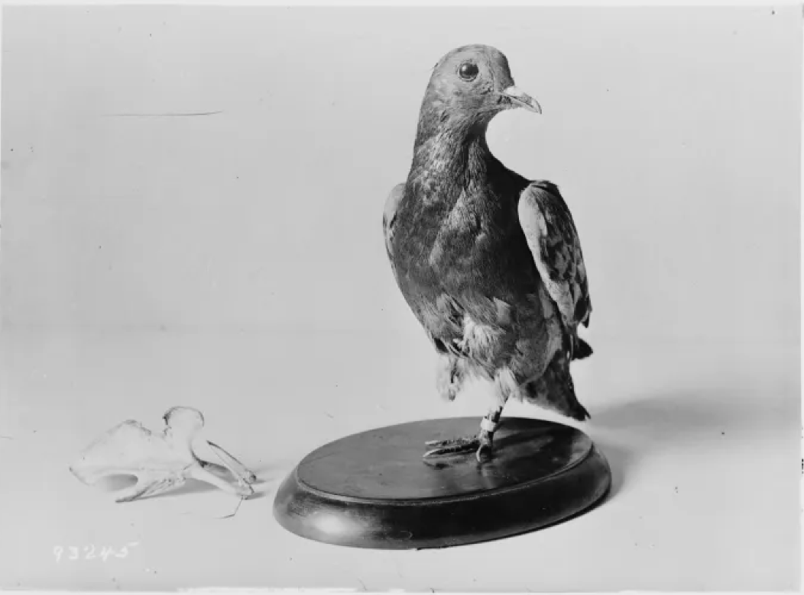

Issue 03 • April 2025
In this special issue devoted to pigeons, we pay tribute to an unlikely hero, known in military history for his courage and determination: Cher Ami (“Dear Friend”). This messenger pigeon, captured the hearts of thousands of soldiers and citizens during World War I. In the fall of 1918, a unit of the American 77th Division found itself cut off in the dark forests of the Argonne (France). Surrounded by German forces and caught in devastating friendly fire, the soldiers found themselves without means of communication. Two carrier pigeons had already been shot down by the enemy, depriving the unit of a vital link to Allied command.
It was in this time of need that Cher Ami, the last messenger pigeon, rose as the final hope for the remaining men. This pigeon was tasked with delivering a message: “We are along the road parallel 276.4. Our artillery is dropping a barrage directly at us. For heaven’s sake, stop it.” Despite the pressure and constant danger, Cher Ami took to the skies on a mission that was nothing short of miraculous. During his flight, the little messenger was badly hit by enemy fire and even shot down in mid-air. Yet despite his serious injuries – including one to his wing – he did not stop. Against all odds, Cher Ami continued his journey, flying some 25 miles across a deadly battlefield to deliver the life-saving message.
Cher Ami’s heroic act helped quickly coordinate a rescue operation that saved nearly 200 soldiers trapped in what would become one of the most dramatic episodes of the war. In honor of this feat, he was awarded the French Croix de Guerre, an international symbol of recognition and gratitude for his extraordinary courage. He returned to the United States a war hero on April 16, 1919, Today, in our magazine dedicated to the wonders of pigeons, Cher Ami proudly holds the spot as Bird of the Month. His story reminds us that even the smallest among us can achieve great things, when duty and courage are combined. The memory of this pigeon inspires not only ornithology enthusiasts, but also all those who believe in the power of sacrifice and solidarity.
Dans ce numéro spécial consacré aux pigeons, nous rendons hommage à un héros improbable, connu dans l’histoire militaire pour son courage et sa détermination : Cher Ami. Ce pigeon messager, a conquis le cœur de milliers de soldats et de citoyens pendant la Première Guerre mondiale. A l’automne 1918, une unité de la 77e division américaine se retrouve isolée dans la sombre forêt de l’Argonne. Encerclés par les forces allemandes et pris sous des tirs amis dévastateurs, les soldats se retrouvent rapidement sans moyen de communication. Avant que le dernier espoir ne puisse être envisagé, deux pigeons voyageurs ont déjà été abattus par l’ennemi, privant l’unité d’un lien vital avec le commandement allié.
C’est dans ce climat de désespoir que Cher Ami, le dernier pigeon messager, s’élève comme le dernier espoir des hommes restants. Ce pigeon est chargé de délivrer un message : « Nous sommes sur la route parallèle 276,4. Notre propre artillerie tire un barrage directement sur nous. Pour l’amour du ciel, arrêtez-le. » Malgré la pression et le danger permanent, Cher Ami a pris son envol pour une mission qui tenait du miracle. Au cours de son vol, le petit messager a été gravement touché par des tirs ennemis et a même été abattu en plein vol. Pourtant, malgré une grave blessure – dont une à l’aile – il ne s’est pas arrêté. Contre toute attente, Cher Ami a poursuivi son voyage, parcourant 40 km environ sur un champ de bataille meurtrier pour délivrer le message salvateur.
L’acte héroïque de Cher Ami a permis de coordonner rapidement une opération de sauvetage qui a sauvé près de 200 soldats coincés dans ce qui allait devenir l’un des épisodes les plus dramatiques de la guerre. En l’honneur de cet exploit, il a reçu la Croix de Guerre française, un symbole international de reconnaissance et de gratitude pour son courage extraordinaire. Il est retourné aux Etats-Unis comme héros de guerre en 1919. Aujourd’hui, dans notre magazine consacré aux merveilles des pigeons, Cher Ami occupe fièrement la place d’oiseau du mois. Son histoire nous rappelle que même le plus petit d’entre nous peut accomplir de grandes choses, lorsque devoir et courage sont réunis. Le souvenir de ce pigeon inspire non seulement les passionnés d’ornithologie, mais aussi tous ceux qui croient au pouvoir des valeurs de la sacrifice et la solidarité.